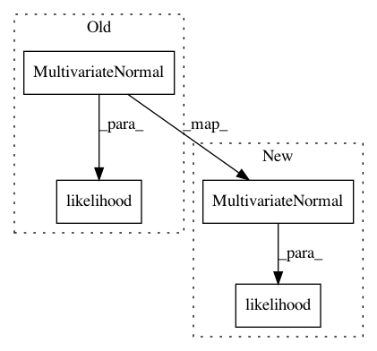

819eae17016f0b262534d0fe50288b8892e8bc08,gpytorch/models/exact_prediction_strategies.py,DefaultPredictionStrategy,get_fantasy_strategy,#DefaultPredictionStrategy#Any#Any#Any#Any#Any#,92
Before Change
// Evaluate fant x train and fant x fant covariance matrices, leave train x train unevaluated.
fant_fant_covar = full_covar[..., num_train:, num_train:]
fant_mean = full_mean[..., num_train:]
mvn = self.likelihood(MultivariateNormal(fant_mean, fant_fant_covar), inputs)
fant_fant_covar = mvn.covariance_matrix
fant_train_covar = delazify(full_covar[..., num_train:, :num_train])
After Change
// Evaluate fant x train and fant x fant covariance matrices, leave train x train unevaluated.
fant_fant_covar = full_covar[..., num_train:, num_train:]
fant_mean = full_mean[..., num_train:]
mvn = MultivariateNormal(fant_mean, fant_fant_covar)
self.likelihood.fantasize(**kwargs)
if "noise" in kwargs:
mvn_obs = self.likelihood(mvn, inputs, observation_noise=kwargs.get("noise"))
else:
mvn_obs = self.likelihood(mvn, inputs)
fant_fant_covar = mvn_obs.covariance_matrix
fant_train_covar = delazify(full_covar[..., num_train:, :num_train])
In pattern: SUPERPATTERN
Frequency: 3
Non-data size: 4
Instances
Project Name: cornellius-gp/gpytorch
Commit Name: 819eae17016f0b262534d0fe50288b8892e8bc08
Time: 2019-04-10
Author: balandat@fb.com
File Name: gpytorch/models/exact_prediction_strategies.py
Class Name: DefaultPredictionStrategy
Method Name: get_fantasy_strategy
Project Name: cornellius-gp/gpytorch
Commit Name: b016f0a41a5c82c37d4c050c66c85764cbd937e9
Time: 2018-09-25
Author: gpleiss@gmail.com
File Name: gpytorch/lazy/lazy_tensor.py
Class Name: LazyTensor
Method Name: exact_predictive_mean
Project Name: cornellius-gp/gpytorch
Commit Name: b016f0a41a5c82c37d4c050c66c85764cbd937e9
Time: 2018-09-25
Author: gpleiss@gmail.com
File Name: gpytorch/lazy/interpolated_lazy_tensor.py
Class Name: InterpolatedLazyTensor
Method Name: exact_predictive_mean